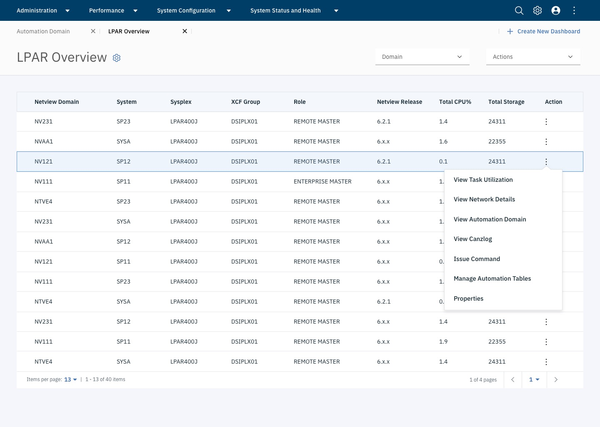
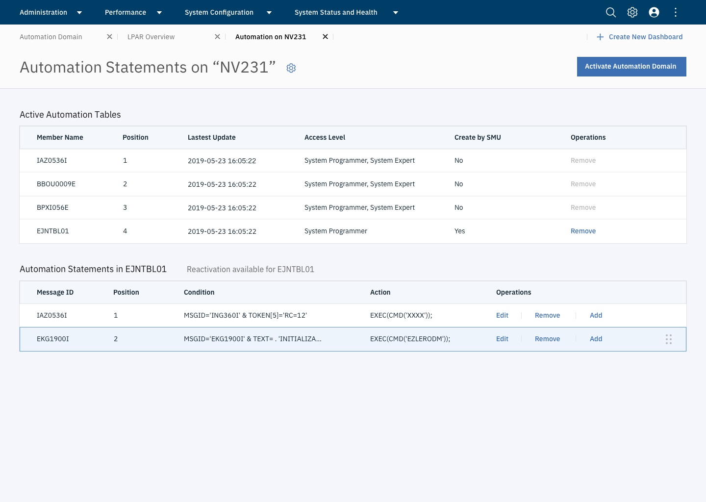
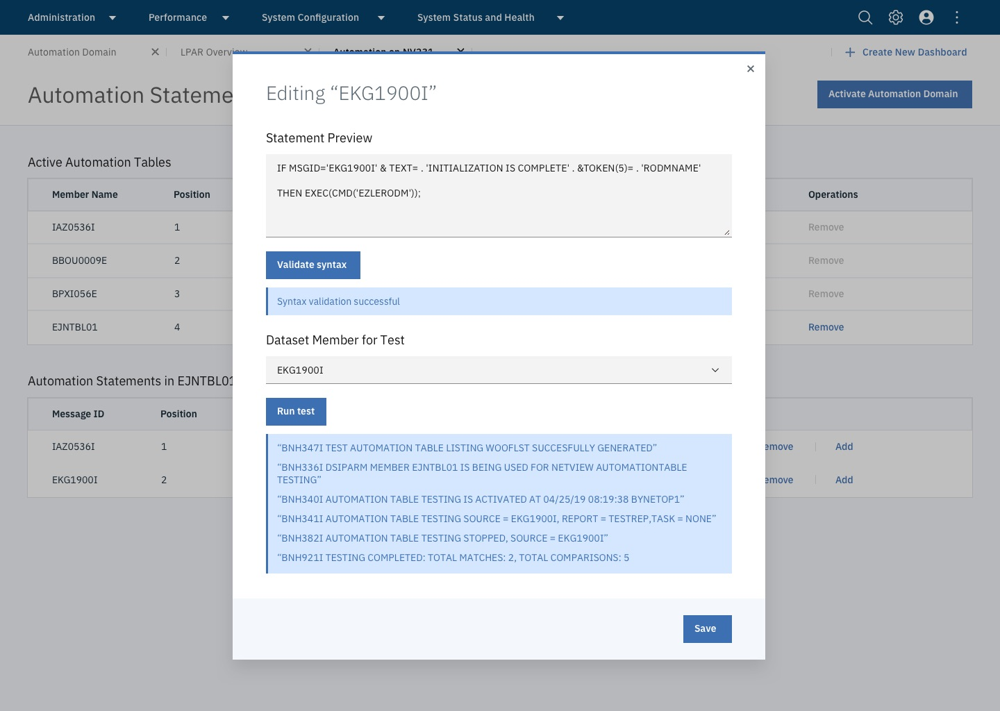
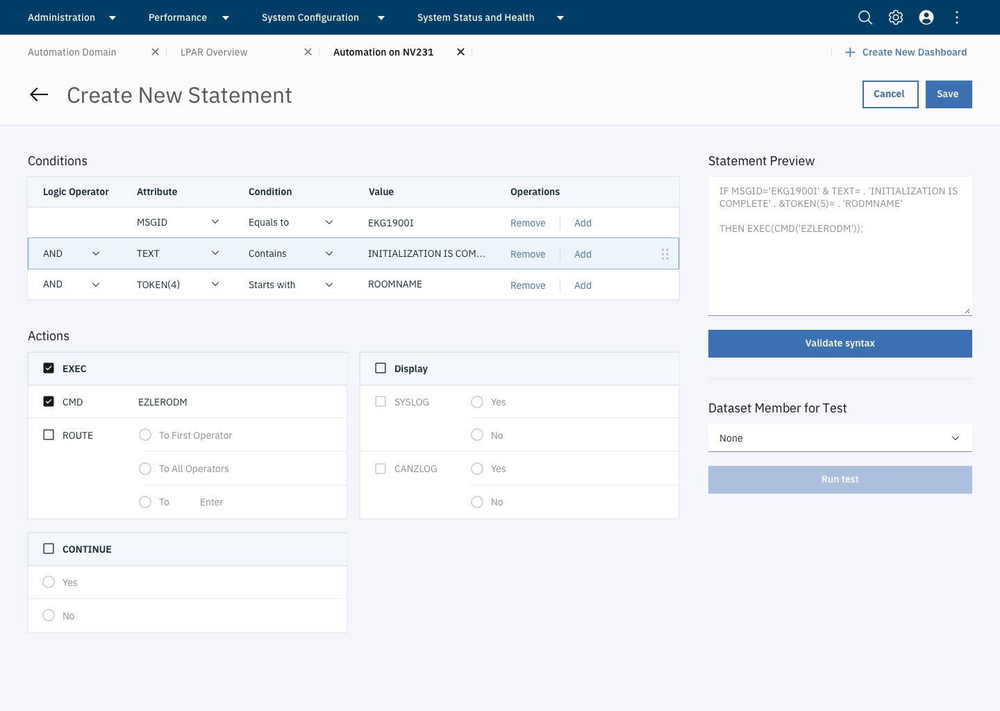
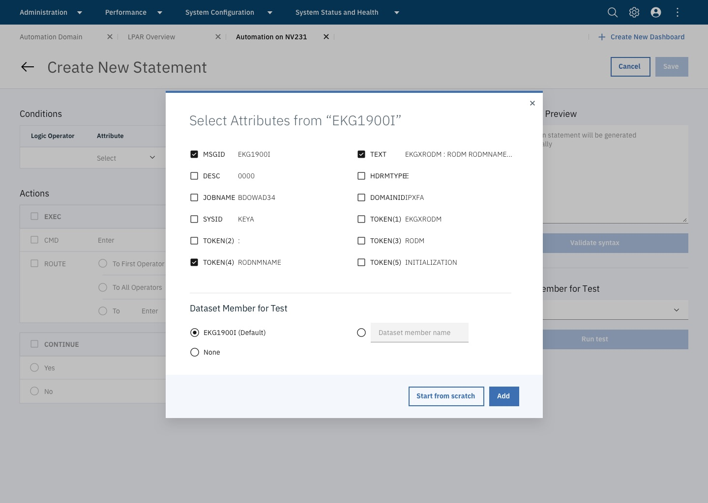
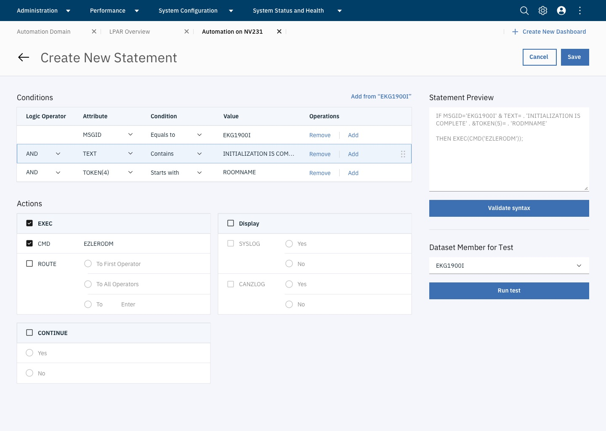

SMU is a front-end user interface which allows system admin and operators to view, analyze and manage resources in vairous products. My responsibility covers a variety of functionalities and products e.g. Workload Scheduler, Service Automation, NetView, etc.
In the meantime, I also initiated and led the design consistency, driving alignments on both UI elements and interaction patterns, and improving dev-design communication efficiency.
Define the GUI experience for system operators to create and manage automation policies for NerView through SMU
How system admins come to the AS management page and the launch points they have?
How system admins create a new automation statement?
NetView Overview: Be able to see NeView server list and decide which one to get started with.
Automation Table Overview: Users drill down the automation table page of single NetView server where they could view and manage existing automation statements.
Edit Existing AS: Users could modify an existing automation statement via coding, test and activate it to the system.
Create New Automation Statement: While users select parameters on the left, code changes are reflected directly on the right preview panel. Users can then perform sytax check and pseudo test as well.
Create from Captured Messages: Users could also import attributes from system logs which speeds up the process when they want to create a similar automation statement.
 Changing a coding-driven experience with full flexibility to an GUI tool is hard, designers will need to be able to extract core users flows and convert it to a GUI-based experience, focusing on efficiency and ease of use, in order to both convert old users and engage young users.
SMU is a front-end product for system admin to be able to access to various resource management tools on Z. The entire interface looks more and more disconnected when more products are integrated, as the dev team and PM team wants to keep the same look as what they are in 3270. That makes it even harder for newcoming designers to pick up the project and continue working because they don't know which style to follow. The "random" style also brings in issues with implementation and design checks as developers and designers need to spend more time on communication.
Product Team: I proposed the initiative to the entire product team, convinced stakeholders and eventually recieved dev resources and supports from both global and local teams.
Design Team: I led a team of 5 designers to create the action plan for this proposal, set up guidelines and standards, create mockups and roadmaps.
Because of the technical constraints, we could not directly adopt IBM Carbon Design. So we decided to come up with our own guidelines while aligning as much as possible to Carbon Design with minimal dev efforts.
The initial proposal has five major categories, 1) page layout, 2) component, 3) interaction patterns, 4) content & tone, 5) typography and 6) logo & icon. Please reach out for details.